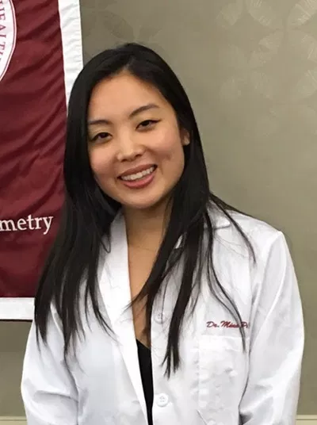
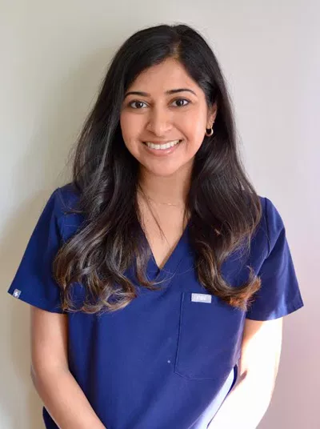
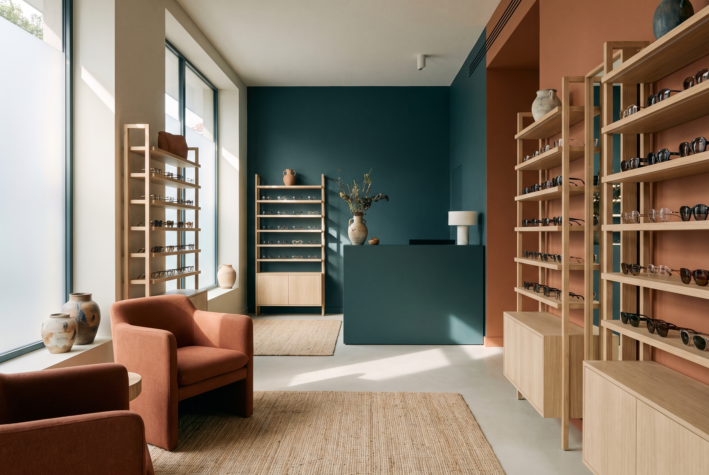

Riverdell Vision · creative direction · 16 August 2026 · round 1
Every direction below uses the practice's own headline, its own facts and its own photographs. Nothing changes between them except how the page is built, which is the only thing worth choosing between. Pick one at the bottom, add any dial-ins, then press Copy my selections.
Who
A Bergen County parent on a phone, mid-comparison, arriving from Google or Zocdoc with one worry: a child squinting at the whiteboard, eyes that burn by 3pm, a referral the last optometrist would not take.
Job
Prove in about two minutes that this is real medicine and not a glasses shop, then hand over a booking. Zocdoc leads everywhere; the request form is the fallback.
World
The phoropter dial, the acuity chart, trial lenses in velvet wells, topography maps, axial length tracked year over year, the Rx written in ruled columns, the duochrome red and green field.
Preserved
Newsreader for display (optical sizing switched on), the logo blue, 5.0 across 448 Google and 4.9 across 396 Zocdoc, four named doctors and their real photos, every URL, and the proof ledger, editorial index, process timeline and studio panel.
Mode
Brand and marketing. Register: a settled, well-made base with exactly one deliberate departure, because trust is the conversion here and this audience does not reward a trend.
The median, written down so it can be refused. The first direction that comes to mind for any optometry practice is a soft blue gradient behind a smiling family, a serif headline with one italic word, three rounded cards with line icons, a review carousel, an FAQ accordion and a sticky booking pill. The current site is two moves from that shape: it has the italic word, it has 67 bordered cards (56 of which differ from the page by nothing but a hairline), and it has a calendar with no availability behind it. None of the three directions below uses a card as its primary container, and none of them keeps the calendar.
Where this disagrees with the house taste. Luxurious, cinematic and technical is the standing preference. This audience is a worried parent comparing three practices at 10pm. Cinematic wins the first three seconds and then has to get out of the way, so all three directions spend their boldness once, in the hero, and run quiet and legible below it. That is a deliberate departure from the usual instinct.
Current · live today
Read the phone frame first. The eyebrow, headline, lead, two buttons, two proof lines, four avatars and a calendar card are eight stacked elements before anything below the fold, and the booking action lands well past it. That is the 531px overshoot, and it is the single most expensive fault on the site.
Direction A
The page is built like the chart on the exam-room wall: one column, rows that step down in size, each row labelled in the margin. Size carries the hierarchy that boxes used to carry.
A parent mid-comparison reads three things and leaves. A chart is legible in one pass and its order is unmistakable, so the two-minute case lands in sequence. It is also the one object every patient here has already stood in front of.
One column at a 68ch measure, rows divided by hairlines, numerals hanging in the left margin. Sections vary by which step of the scale they open on. Two photographs interrupt the column full bleed (the room, then the phoropter). No section is a card.
Newsreader display with optical sizing on, so 104px and 20px are different letterforms rather than one scaled. Five fixed steps at a 1.5 ratio (20/30/45/68/102 desktop, three steps at 390). Instrument Sans text at 17px/1.55. Geist Mono for margin labels only, one size, one tracking. Refuses a second display face, uppercase headings, italic body, and any size off the five steps.
Photography-led at exactly two moments. office-oradell fills the hero, object-position 50% 42% so the frame wall survives the 390 crop. hero-care (the phoropter) runs full bleed before the ask. dry-eye, myopia and specialty-lens stay at row scale, never above 480px wide. The four portraits never exceed 96px, which is inside their real resolution of 340 to 480px. Type over photo gets a scrim shaped to the type side, measured at the worst region.
Still, with one moment. Signature: the refraction snap, as approved. The headline arrives at 5px blur and resolves over 900ms while a hairline draws from the left margin to full measure, landing on the same beat, like a lens dropping into the phoropter. First visit only, never on back navigation, instant and already drawn under reduced motion, and it never animates from zero opacity so the LCP text still counts. Everything else is simply present.
The type scale is the layout system. Importance is a size step in one column rather than a card, a tint or a band, which is precisely how the site sheds 67 bordered containers without losing hierarchy.
Bordered cards, three-up card rows, tinted bands used as a substitute for hierarchy, an eyebrow on every section (three per page maximum), rounded-full pills, fade-up-on-everything, and the mocked calendar.
A single column depends entirely on typographic quality and on the photographs being good; a weak 390 crop leaves nothing to hide behind. And the top step must not get so large that "Eye care" reads as decoration instead of a sentence.
Direction B
The site is set the way the practice writes: two columns, ruled rows, the label on the left and the value on the right, everything on one paper ground.
The job is to prove this is medicine, and a record proves it by form instead of by adjective. It is the only direction where FCOVD, five in-house programs, four doctors, English and Korean, 2016, 5.0/448 and 4.9/396 sit together in one readable block above the fold. It also turns the small portrait files into an asset, because a roster row wants a 56px portrait, not a 900px one.
Hero splits 44/56 under an in-flow header, the photograph bleeding off the right and bottom edges while the two columns together fill the window. Below it the page alternates between the two-column record and full-measure ruled rosters (doctors, programs, hours). Ground is constant; rules do the dividing. Density is high and continuous rather than paced.
Newsreader held back to the headline and the roster names, optical sizing on. Instrument Sans carries labels, values and body, tabular figures on every number so columns line up. Geist Mono for the label column only, 10px, one tracking. Four steps: 15/17/28/56. Refuses display type over 64px, italic outside the single hero accent, and uppercase anywhere someone has to read.
The photograph is a column, not a stage. office-oradell holds the hero's right column at 56% width. Below the fold every image is cropped to the column measure at a fixed ratio and bleeds off one edge at most. The four portraits run at 56px in the roster and 96px on About, inside their real resolution. specialty-lens (the lens on a fingertip) is the one macro allowed to run wide, because it is the only frame in the set that survives it.
Still. This is the direction where I would argue against the approved signature. This hero is a document, not a stage, and a blur-to-sharp headline undercuts the thing a record is claiming. The signature here is structural: the axis, a ticked measurement rail in the left margin labelled from the practice's own record (2016 to now, the five programs), that the page scrolls against so the whole site reads as one continuous chart. If the snap is kept anyway, it belongs on the figures, not the headline. Reduced motion changes nothing, because nothing moves.
The proof is the layout. No other practice in Bergen County publishes itself as a record, and a competitor cannot copy the form without owning the facts that fill it.
Dark full-bleed bands (there are none, which also fixes the two dark sections currently sitting back to back), text over a photograph, count-ups anywhere except the existing proof ledger, decorative icons, card shadows, and any figure that is not real.
It can read cold, and a frightened parent needs warmth. This direction spends its warmth in two places only, the photograph and the coral accent, so if the copy is not warm the page will not be. It is also the hardest to hold over time: one lazy section reverting to cards breaks the conceit.
Direction C
The site works the way the exam works: two states, one is better, then the next pair, converging on a single action. The soft panel in the frames is the unchosen option, held at the blur it resolves from.
This visitor is literally mid-comparison, with two other practices open in other tabs. A page built on comparison is the one structure that matches the state they are actually in, and the practice already owns the honest comparison content: six rows of physician-led against retail, plus the care finder.
Centred hero over a full-bleed photograph, then alternating zones: light for reading, teal-deep for comparison. Each comparison zone is a labelled pair with a step counter. At most two dark zones on the page. Sparse and stepped rather than dense.
Newsreader centred at 88px in the hero with optical sizing on, dropping to 34px for section heads. Instrument Sans for panel content, both sides of every comparison set at the same size and weight so the difference is content and never styling. Geist Mono for step numbers and device labels. Refuses type over 100px, uppercase headings, and any treatment that makes one side of a comparison look pre-won.
Two photographs carry the page. office-oradell in the hero under a cool scrim. hero-care (the phoropter, the only portrait file at 1450x1800) is the ground of the comparison zone, cropped to a band on desktop and left portrait at 390 where it is strongest. Everything else is a small figure inside a panel; portraits stay at 64px inside the "who you would see" pair.
Responsive, with one orchestrated arrival. The refraction snap becomes the whole motion vocabulary: soft to sharp over about 900ms, once on load for the headline, then again every time a comparison resolves, so the gesture means the same thing everywhere. An unchosen panel sits at 2px blur, which is the same idea held still. Under reduced motion, blur is replaced by an opacity step (100% against 55%) with no transition.
It turns the practice's strongest argument into the page's interaction model instead of a table in section six.
A hero that only sits there, fade-up-on-scroll as the site's answer to motion, more than two dark zones, and any comparison that names or implies a competitor.
The loudest of the three against a register that was settled as one departure, not two. A repeated gesture plus inverted zones can tip from confident to gimmicky, every comparison is a tap at the moment the visitor wants a button, and spending the signature this widely stops it being a moment.
The collapse test
| Pair | Axes they differ on |
|---|---|
| A against B | Composition (one column against two), typography logic (five-step display-led against four-step text-led), information density (paced against continuous), image strategy (interrupting full bleeds against column-bound), motion (one moment against still), colour behaviour (ground and ink with one accent against four light tonal surfaces). |
| A against C | Composition (left-aligned column against centred and layered), interaction model (read-only against exploratory), motion character (one moment against a repeated gesture), colour behaviour (single ground against inverted zones), navigation (persistent bar against bar plus step rail). |
| B against C | Composition (columnar against centred), surface treatment (printed against layered), colour behaviour (no dark bands at all against two inverted zones), motion (still against responsive plus orchestrated), density (dense against sparse), interaction model (read-only against configurable). |
Result: no pair shares all axes, and no sentence can be swapped for another without changing the page's construction. All three pass. The three would also fail the paste test in different ways if lifted to another practice: A needs a real chart of content to step down through, B needs the facts to fill the table, C needs an honest comparison to run. A generic optometrist has none of the three.
Your picks
Family optometry · Oradell, New Jersey
The warmth of a boutique practice with the rigor of real medicine. Physician-led family eye care for every age, in a calm, modern space in the heart of Oradell.


Meet our 4 optometrists →Book an appointment
Real-time availability on Zocdoc
448 patients rate us 5.0 on Google
448
Google reviews
A genuine five-star average from real patients.
396
Zocdoc reviews
Verified by patients who booked through Zocdoc.
10
Years of family eye care
Caring for Bergen County families in Oradell, NJ.

Oradell, New Jersey · since 2016
Eye care
that’s actually
medicine.
The warmth of a boutique practice with the rigor of real medicine.
Oradell, New Jersey
The warmth of a boutique practice with the rigor of real medicine.
A typical retail optical: moving you toward frames.
Riverdell Vision: protecting and understanding your eye health.
The unchosen side sits at the blur the chosen side resolves from